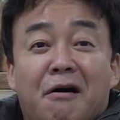

백종원이 담배를 끊고 15일이 지나자 일어난 일
댓글


봉골레는 게놈지도에 없었나보네 마늘 빠진거도 몰랐던거 보면
게놈(대본) 지도
병신이네
다들 드립 생각하는 와중에 핵심을 찌르는
나여! 에휴...

레시피가 뭐에유?
요래조래이래...
지금 나 가르치는 거에유?
개웃기넼ㅋㅋㅋㅋ
개쌍놈일지도..
아 게놈이셔?

ㅋㅋㅋㅋㅋㅋㅋㅋ
게놈[독일어]Genom
낱낱의 생물체 또는 1개의 세포가 지닌 생명 현상을 유지하는 데 필요한 유전자의 총량. 사람과 같은 진핵생물의 경우 반수(n)의 염색체에 있는 유전자의 총량.
게놈 지도(Genome Map)는 이 유전정보를 분석하여 다음과 같은 정보를 정리한 것이다.
유전자 위치: 특정 유전자가 염색체의 어느 부분에 있는가?
유전자 배열: 유전자와 유전적 표지들이 어떤 순서로 배치되어 있는가?
DNA 서열: DNA를 구성하는 염기인 A, T, G, C가 어떤 순서로 배열되어 있는가?
기능적 정보: 특정 유전자가 어떤 단백질을 만들거나 어떤 생물학적 기능에 관여하는가?
ㅋㅋㅋㅋㅋㅋㅋㅋㅋㅋㅋㅋㅋ 자기는 눈이 좋아서 dna를 눈으로 볼 수 있다고 입터는꼴
ㅋㅋㅋ왤케 자기를 포장하는지 모르겠음
그냥 인테리어 업자면서
이거 게놈새끼아녀

연예인 중에 '거짓말 안하고' 라는 말을 제일 많이 하는 사람인듯 ㅋㅋ
생각해보니 그렇네
자꾸 거짓말 아니라고 자주 강조하는데
당연히 거짓말이 아니어야지
당연한걸 계속 말해
거짓말이니까
???:저는 거짓말 절대 안해유 !!
ㅋㅋ 진짜 염병..
음식들 태우지나 마라

절대미각 ㅋㅋㅋㅋㅋ
개놈지도 활용
소고기 떡 케익 완성
ㅋㅋㅋㅋ그거 영상 먹고나서 표정 아직도 기억나네
게웃기네 ㅋㅋㅋ
담배로 능력을 억누르고 있었다니 나여~!

한입먹으면 다 알게되지만
일단 레시피 가져와봐유 ㅋ
그냥 마리텔 백주부 딱 그 정도 선에서 친근한 아저씨 정도에서 놀고 요식 사업하고 했어야 했는데 나대고 그런 걸 좋아라 해서 그랬는지 방송에도 무리수 남발하고 사업 확장한다고 이상한 짓을 너무 많이 함 예전에 재밌게 봤었는데 이제는 보기 싫어짐
100게놈